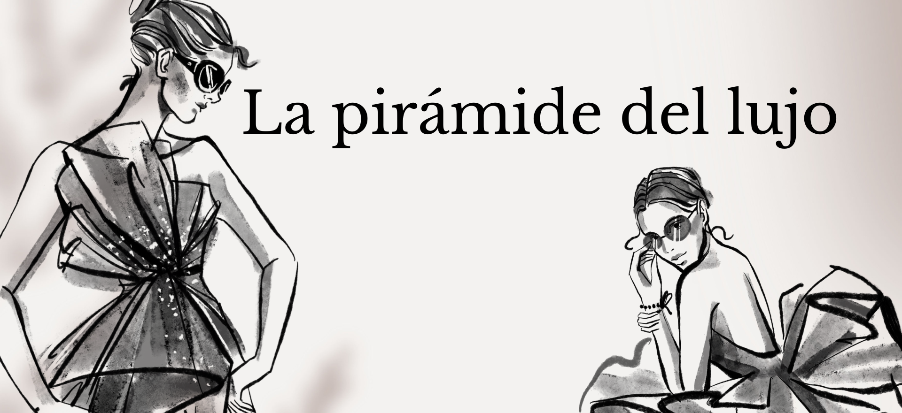

MARCAS EN LA CUMBRE
Como pudimos ver en el inicio, las marcas en la cumbre del triangulo son las siguientes:

Este famoso bolso de la marca Dior tiene el nombre de Lady Dior. La maison francesa nombró al pequeño y femenino bolso de mano, Lady Dior, en honor a la princesa "Lady D". Hoy, es un icono atemporal. En el 20 aniversario de la muerte de Diana de Gales, el mundo recuerda los momentos más icónicos de la reina de corazones, como Tony Blair la describió.

De la misma manera el bolso Birkin de Hermés tiene su nombre por Jane Birkin. Jean louis Dumas, director de la marca por aquel entonces, mantuvo un encuentro casual e un avión con la famosa actriz, y observó como lidiaba con su cesta de mimbre para que no se salieran sus cosas de ella. Dumas se ofreció a diseñarle un bolso que cumpliera con sus necesidades y desde entonces el bolso Birking es el más reconocido e incluso uno de los más caros e inaccesibles del mundo. Se dice que solo puedes tener uno si cumples con los requisitos que la marca impone, no basta con tener el dinero para pagarlo. Su precio oscila entre los 30.000$.

Tras el deseo de innovación de Coco chanel en el mundo de la moda, decidió hacer algo que otras marcas no habían hecho antes, sacar un perfume a la venta. El Chanel número 5 fue el perfume elegido por Coco, ya que fue la quinta fragancia de las que probó la que llamó su atención. Para Coco el perfume era otro complemento más. Sin duda sue una diseñadora muy innovadora que sirvió de gran inspiración en el mundo de la moda.
"Web de Marta Alcaide"